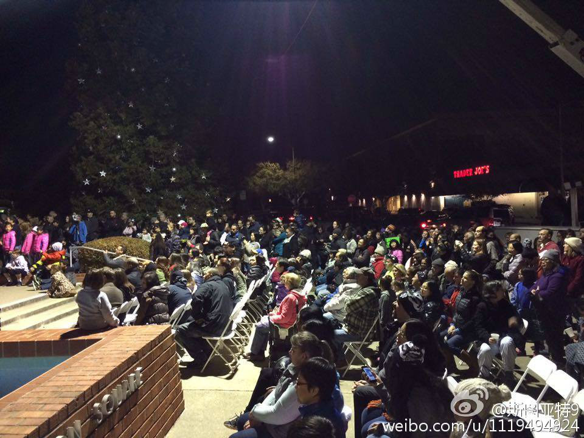

圣诞节是个洋节不假，所以说开始过圣诞年轻人“崇洋媚外”算有点道理。但圣诞节是不是一个宗教节日，却是值得讨论的。其实西方很多无神论者也是过圣诞的，比如这个著名的无神论者 网页链接 。节日的起源未必等同于现在节日的意义。据说春节起源于驱散怪兽，春节就成了个迷信节日了吗？
有人说美国是个政教分离的国家，圣诞节是个宗教节日，所以政府不应该举办圣诞节相关的活动。说的有道理，那政府应该执行吧？结果政府还是布置圣诞树，还是举行亮灯仪式，只是不管哪个叫圣诞树，叫节日树（holiday tree）。体现这个国家对宗教宽容的表里不一，口是心非。（图为我们镇举办的亮灯仪式） 
 网页链接 。节日的起源未必等同于现在节日的意义。据说春节起源于驱散怪兽，春节就成了个迷信节日了吗？
网页链接 。节日的起源未必等同于现在节日的意义。据说春节起源于驱散怪兽，春节就成了个迷信节日了吗？